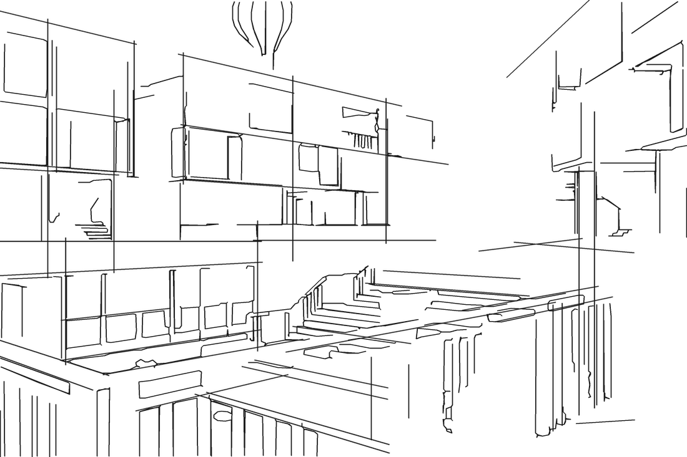
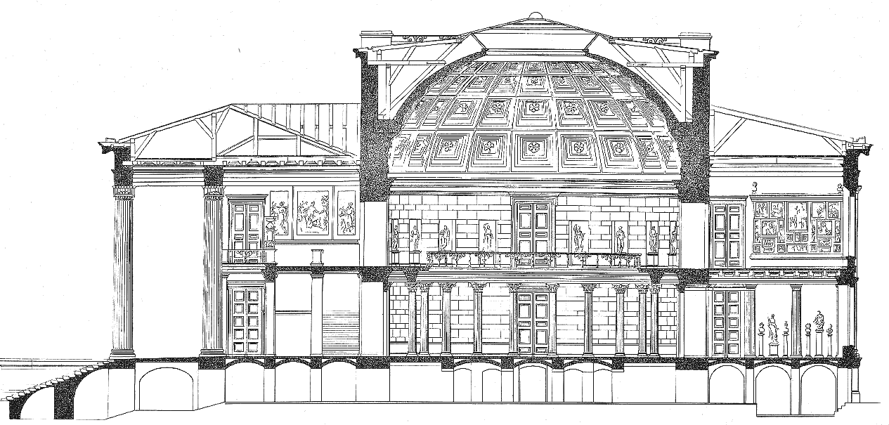
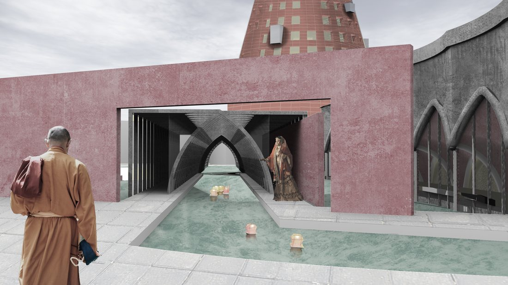
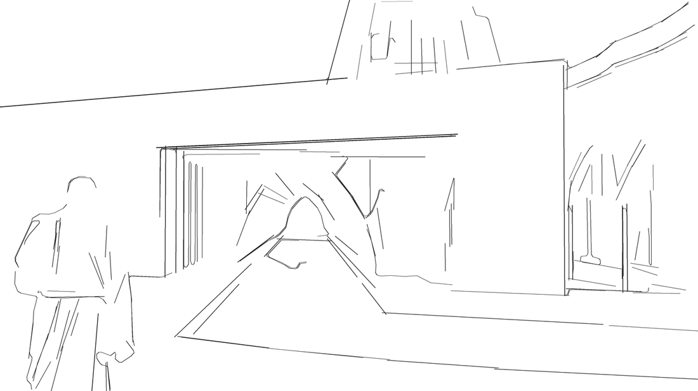
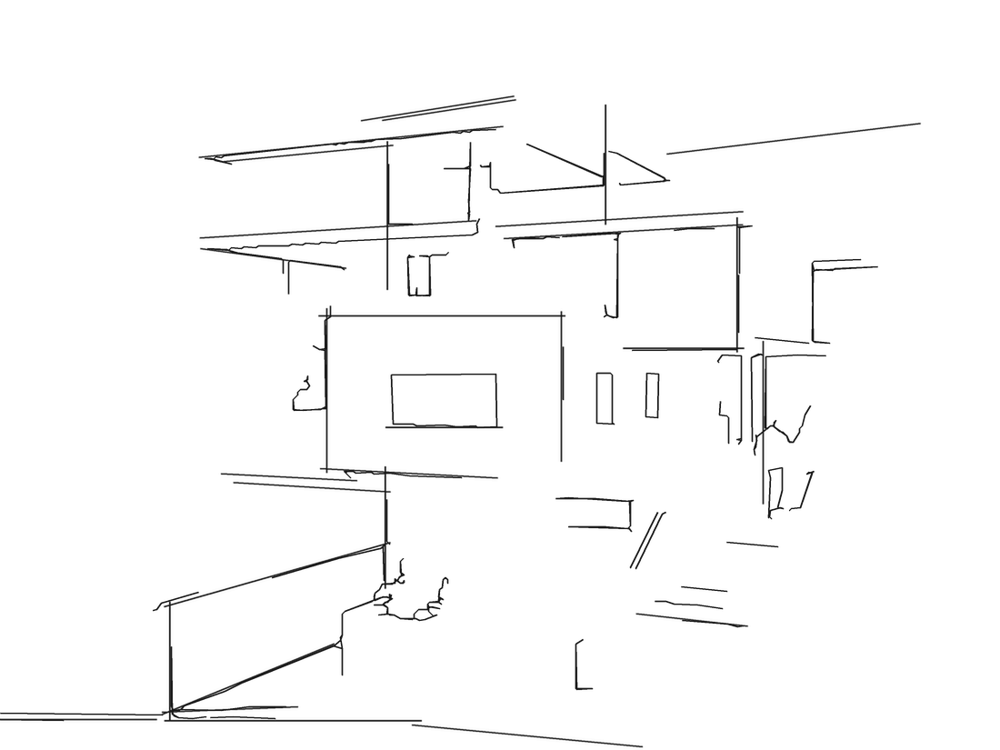
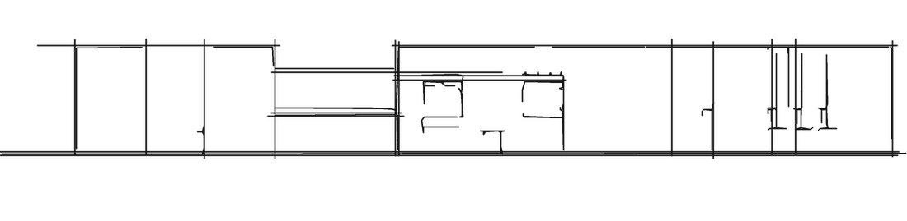

Siqi Zhang
Siqi Zhang
Siqi Zhang
Siqi Zhang
Architectural designer in Los Angeles. I run residential and small commercial projects end to end and care most about how people actually live in what gets built.
Move across a drawing to cut it
Line style references


The Collage Community 2018

Style reference, not my work: Karl Friedrich Schinkel, 1824
 Downstairs Bazaar 2020
Downstairs Bazaar 2020


River Lantern 2020

Westfall Hillside House 2025
 Ashton House Remodel 2025
Ashton House Remodel 2025


Marxism School Building, PKU 2019
 Beck Corner Apartment 2023–2025
Beck Corner Apartment 2023–2025
Three years of post-graduate practice in Los Angeles, running 20+ projects at a time from schematic design through permit. Work spans hillside single-family homes, 100% affordable multi-family housing, ADUs and tenant improvements, with earlier large-scale commercial design for South Korea at CallisonRTKL.